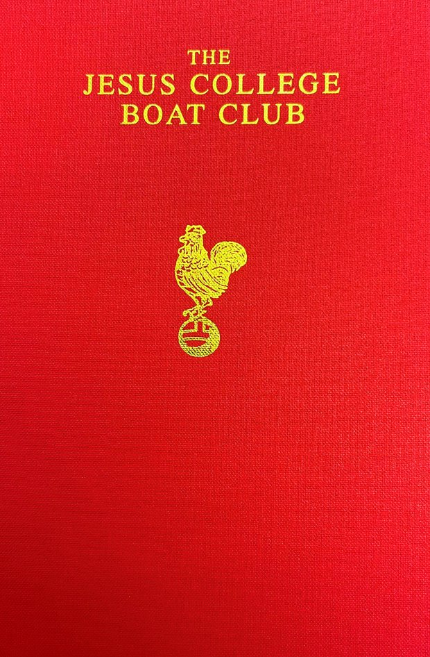
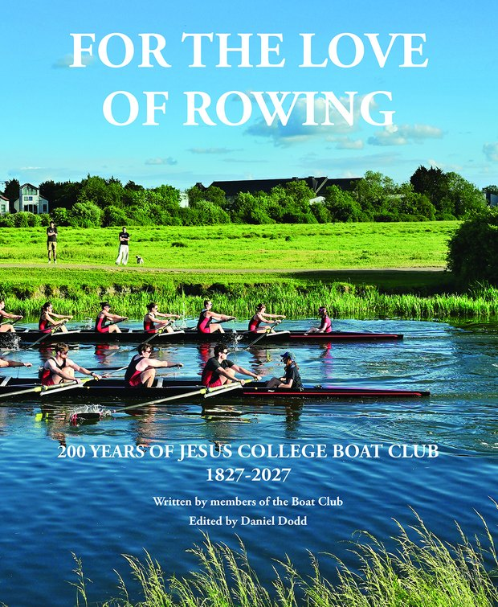

The Fairbairns 2026
After the Fairbairn races, alumni are invited to dinner in College, with around 100–150 places available. There will also be a drinks reception, and the Master will open a bicentenary exhibition in the Marshall Room.
JCBC turns 200 in 2027. Join us for racing, dinners and crew reunions throughout 2026–27.
Alumni and the College have put together a year of events to celebrate the club's 200th birthday. We start with the Fairbairn Cup in December 2026 and finish with a day of rowing, talks and dinner in College in September 2027.
You'll find booking details and updates on the College's events page. Join the mailing list for termly club and bicentenary news, or read about our first 200 years in the club history.
Places at the dinners are limited and current rowers have priority, so alumni bookings are first come, first served.
After the Fairbairn races, alumni are invited to dinner in College, with around 100–150 places available. There will also be a drinks reception, and the Master will open a bicentenary exhibition in the Marshall Room.
Alumni can watch from the Paddock at Fen Ditton on all four days. Bring a picnic or BBQ. On Saturday there will be a College bar and gazebo, plus coffee and food trucks. Back in College, there's a celebratory brunch and Mays Dinner in Hall that evening, with limited dinner places.
The Club hosts a drinks reception during the tea interval on Friday 2 July, in the CUBC marquee behind the Stewards’ Enclosure. All are welcome, and you will not need a Stewards’ ticket to join.
Get your old crew together for a row on the Cam, hear talks from some of the club's top rowers and join the activities in College. The day ends with an anniversary dinner in Hall.
The sixth volume of the ‘Red Book’ records our crews, while ‘For the Love of Rowing’ tells the club's history through photographs and personal accounts. Both are available to pre-order through Jesus College.


Join the mailing list for updates, or visit the College's events page for booking details.